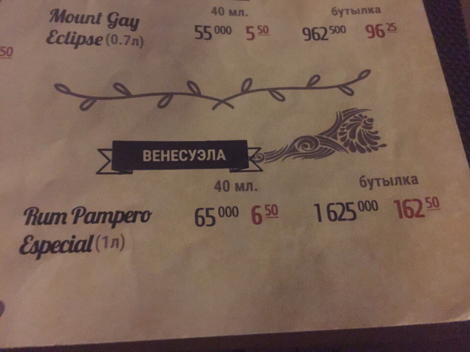
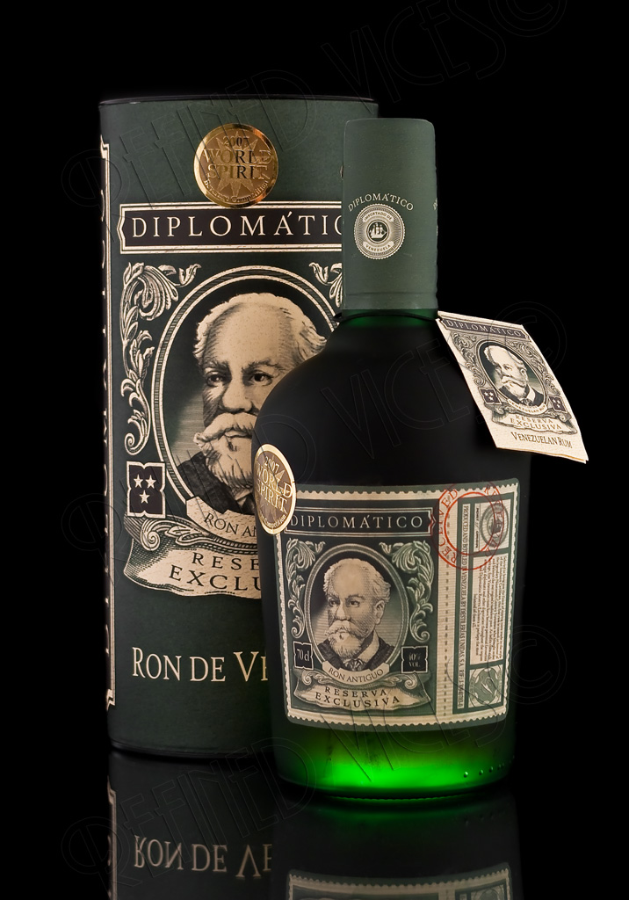
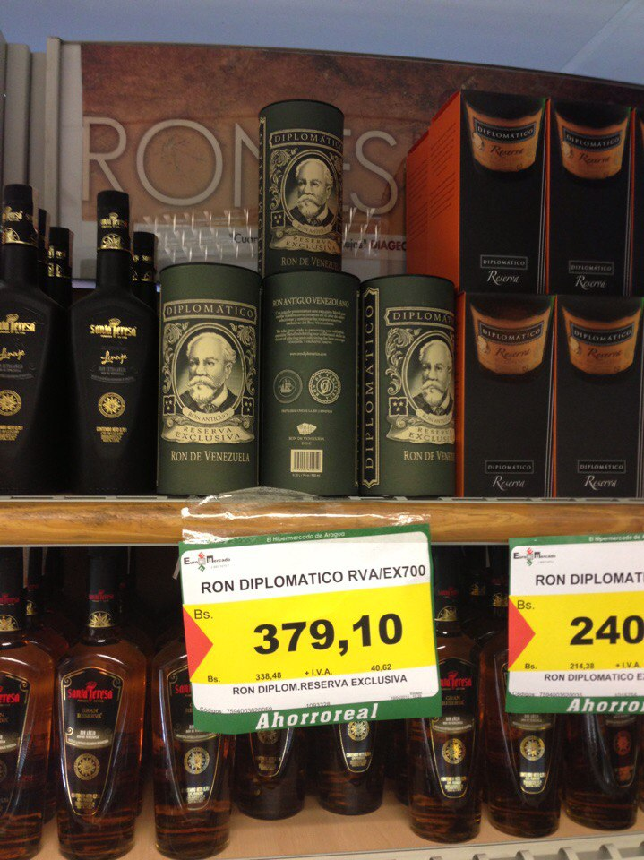

- Холодно лишь под кондиционером
- Очень красивая природа
- Чудесной красоты девушки
- Утро начинается не с cafe
- Вероятность дождя зимой нулевая
- А вот летом наоборот
- Йогурт хорошо, а арепа лучше
- Танцы и музыка
- И самый вкусный в мире ром

Ну куда ж без рома?
Он прекрасен
Венесуэльский ром – это хорошо сбалансированный элитный крепкий напиток. Отличается от многих тем, что даже у самого дешевого минимальная выдержка 2 года. Это один из самых популярных сувениров, покупаемых туристами Венесуэлы. Его изготавливают исключительно из местного сырья в соответствии со строгими стандартами качества и под неусыпным контролем. Ром Венесуэлы является важным игроком на мировом рынке, и продается даже в нашей стране.

А самый вкусный какой?
Есть один. К сожалению, в Республике Беларусь его не продают. Есть в Москве. Есть в некоторых европейских duty free. Он называется Diplomatico Reserva Exclusiva, выдержка этого рома 12 лет.
 
наверх